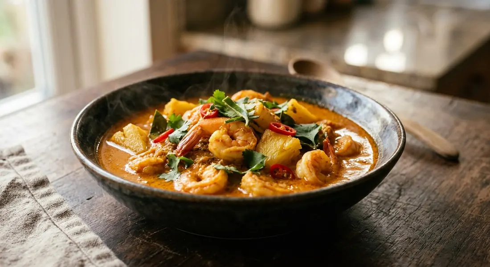

Curry paste fried in coconut milk until the oil splits, then sour pineapple, prawns and kaffir lime — the south's answer to the question of what to do with a pineapple too sharp to eat.

แกงคั่วสับปะรด splits neatly into its parts: คั่ว (kua) is the technique — curry paste fried in coconut milk until the fat breaks out and beads on the surface, a step every Thai source calls กะทิแตกมัน — and สับปะรด, the pineapple that becomes the body of the curry. No vegetable filler, no meat doing the heavy lifting: the pineapple is the dish.
It is, above all, a home curry. The Pantip cook whose post opens the topic made hers because a street-cart pineapple came home too sour to eat, and she notes you rarely see the dish for sale — prawns are too dear for a stall to give it away. Her fix, the same fix in every southern kitchen: if the pineapple won't do the souring, a spoon of tamarind water will.
The paste carries the south with it. The old-style kua paste, as tukata001's recipe teaches, is red curry paste with pounded dried fish worked in — that is what separates kua from a plain red curry, and Wongnai's mussel pot arrives at the same place by another road, pounding soaked dried shrimp into the paste. Kapook's editors add the practical footnote: if you like it properly hot, buy the southern kua paste.
| Thai | English | Amount |
|---|---|---|
| สับปะรด | Pineapple, cut small | 1 |
| กุ้ง | Prawns | 200 g |
| น้ำพริกแกงคั่ว | Kaeng kua curry paste | 3 tbsp |
| กะทิ | Coconut milk | 1 can |
| น้ำปลา | Fish sauce | 3 tbsp |
| น้ำตาลปี๊บ | Palm sugar | 1 tbsp |
| ใบมะกรูด | Kaffir lime leaves | 6 |
The mussel pot (Wongnai): ½ pineapple, ½ kg frozen NZ mussels, 100 g paste, 500 ml coconut milk, a handful of tamarind pulp, 3 tbsp dried shrimp — half of them pounded into the paste — seasoned with palm sugar and tamarind water, cooked in five minutes. The southern chicken pot (TrueID): 400 g chicken, 500 g pineapple, 150 g ready-made paste, 350 g coconut milk, eaten with rice or khanom jeen. The Pantip pot: prawns and mussels together, coconut milk, pineapple and Mae Ploy red curry paste — tamarind water only if the pineapple turns out sweet.
The protein. Prawns (Kapook, tukata001's Bloggang original), prawns and mussels together (Pantip), mussels alone (Wongnai), chicken (TrueID's southern cook). Pantip explains why the prawn version is special: it is rarely sold because prawns are expensive — the dish is a home curry, and it takes whatever protein the kitchen has.
The sour. Kapook, tukata001 and TrueID let the pineapple carry the sour on its own. Wongnai adds tamarind water as a full co-star. Pantip splits the difference: tamarind only if the pineapple isn't sharp enough. All four warn against adding much sugar — that is the point of the pineapple.
The paste. tukata001's old-style paste pounds dried fish (ปลาแห้ง) into red curry paste; Wongnai pounds soaked dried shrimp into the kua paste — the same instinct, two proteins. Wongnai and TrueID otherwise use ready-made kua paste, and Pantip shortcuts straight to Mae Ploy red curry paste. All still call the dish kaeng kua.
When the prawns go in. Kapook and tukata001 fry them briefly in the split coconut milk, half-cooked, before the rest of the liquid goes in. Pantip holds them back and adds them last, just until they are done. Both rules point the same way: never long-simmer prawns.
The kaffir lime leaves. Kapook and tukata001 add them with the pineapple, mid-cook, where they stew into the curry. Pantip, TrueID and Wongnai scatter them at the very end, so the aroma sits on top instead. The cooked-in version is deeper; the scattered version smells like the leaf itself.
This recipe is translated from the following Thai-language sources. Where they disagree, we've said so.
1. Kapook Cooking — "แกงคั่วสับปะรดกุ้ง แกงไทยหอม ๆ พ่วงสูตรน้ำพริกแกงคั่วโบราณ" (the recipe used here) — cooking.kapook.com
2. Bloggang — "แกงคั่วสับปะรดใส่กุ้ง by ครัวตุ๊กตา" by tukata001 (the original post of the same recipe; the old-style dried-fish paste) — bloggang.com
3. Wongnai — "แกงคั่วสับปะรดหอยแมลงภู่" by GopOpOp (the mussel pot, tamarind and dried shrimp) — wongnai.com
4. Pantip — "แกงคั่วสับปะรดกุ้งสด" topic 36114869 (the sour-pineapple rescue story; the Mae Ploy shortcut) — pantip.com
5. TrueID Food — "เข้าครัวกับสาวใต้ EP.2 ทำแกงคั่วไก่สับปะรด" (the southern chicken pot, khanom jeen) — food.trueid.net